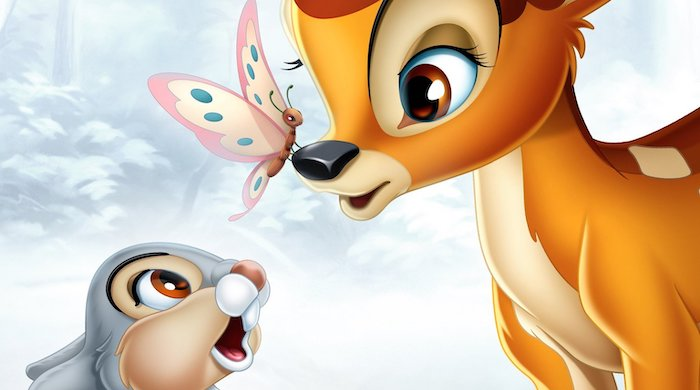

Bambi

The story of a young deer growing up in the beauties and the dangers of the forest.
Storyline
It's spring, and all the animals of the forest are excited by the forest's latest birth, a buck fawn his mother has named Bambi. The animals are more excited than usual as Bambi's lineage means he will inherit the title of prince of the forest. Along with his mother, Bambi navigates through life with the help of his similarly aged friends, Thumper, a rabbit kit who needs to be continually reminded by his mother of all the lessons his father has taught him about how to live as a rabbit properly, and Flower, a skunk kit who likes his name. As different animals, they have their own issues and challenges which may not translate to the others. Being similarly aged, Bambi, Thumper and Flower may have to experience the uncharted phases of their lives without the knowledge or wisdom unless gleaned from those who have gone through them before. Bambi has to learn early that the lives of deer and of many of the other forest animals are not without their inherent dangers, for deer especially in the beautiful albeit exposed meadow. Bambi will also find that his ascension to prince of the forest is not a guarantee as other buck deer and situations may threaten that ascension.Details
Duration: 1h 10minRelease Date: August 9, 1942 (United States)
Genre: Animation · Family · Fantasy
Directors: James Algar · Samuel Armstrong · David Hand
Starring: Hardie Albright · Stan Alexander · Bobette Audray